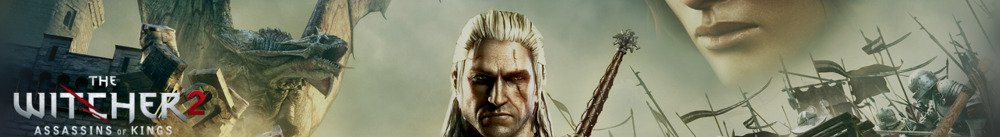
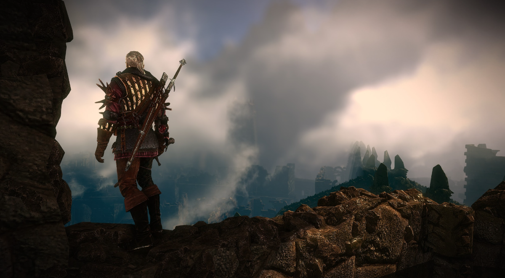

Having completed this game 3 times now, twice 10 years ago and again recently I would have to say it is worth it with some caveats.
The gameplay is were it shows most of its age. It's not really bad or anything just janky and clunky. The combat in particular suffers from this. You have to manually control the camera, it doesn't follow who you're targeting. It feels like pot luck if you get geralt to switch targets. Sometimes he lunges at targets to cover the distance, other times he stands in place and misses by a mile leaving himself open. The dodge covers to great of a distance meaning you can't step back then strike and sometimes pressing attack he'll just do nothing.
It's not all bad though. There are some cool animations and it does sometimes feel satisfying slashing at enemies but overal it just feels like you are not in control of what happens. I played on easy mode and ended up installing a mod to make combat even easier because I wasn't enjoying it. I remember it having this problem back in the day. I wanted to like the combat then but it never really clicked with me. Now with the luxuries of modern gaming it feels like a chore.
Wandering around the levels and interacting with characters is fine though. The graphics still hold up and it's a game you can get imerrsed in with its interesting and varied environments (posh cities, poor slums, forests, rivers, etc).
The story is where the witcher games really shine though. There are several main story threads and many substories. A lot of these can drastically change the course of the game (Act 2 can be completely diferent). There are many morally grey choices that the witcher series is known for and it's fun making your decisions and seeing where they lead.
The main story is really good. I like the animation it plays at the start of the game with the king slayer slaying his first king and the cutscene early in the game of him slaying his second. The mystery of whos slaying these kings and why is very interesting and kept my hooked through the entire game. The various characters you meet are all interesting in their own right and seeing how they all piece together is really cool and interesting. This is what made me replay the game and try out different paths.
A minor complaint is that a lot of it was lost on me. Even though its my 3rd playthrough and I've just finished Witcher 1 again I was still lost with the various characters, states, who's at war with who, etc. To really get your enjoyment out of it you would have to take your time and read all the notes and study the lore. Having said that the main story does a good enough job of keeping you interested even if you don't know who exactly they are talking about.
I would recommend it for the story alone. It is the reason I replayed it before I replay Witcher 3 again. If I remember right the combat is much improved on that game. Took me around 20hrs to complete and I was mostly doing the main quests.
